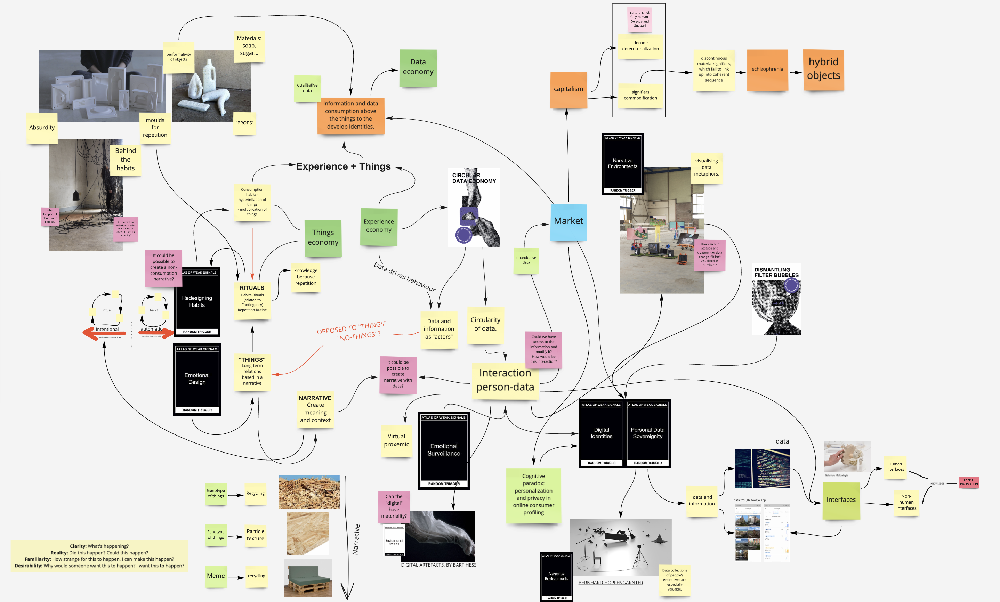
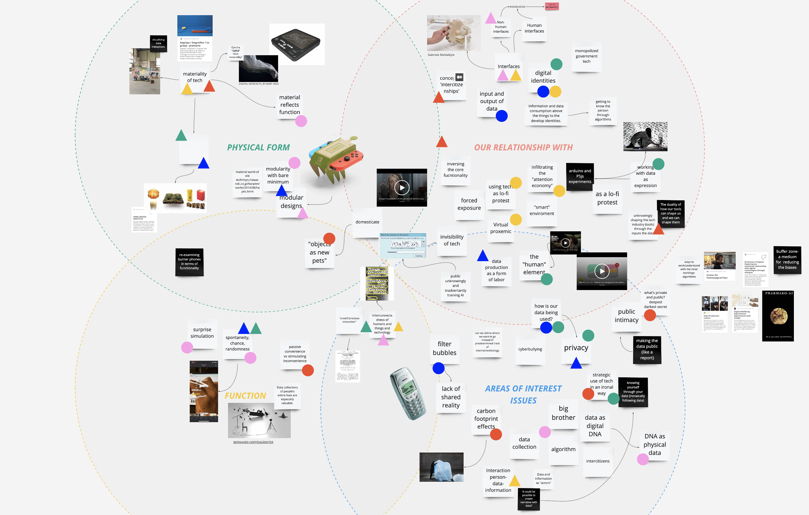
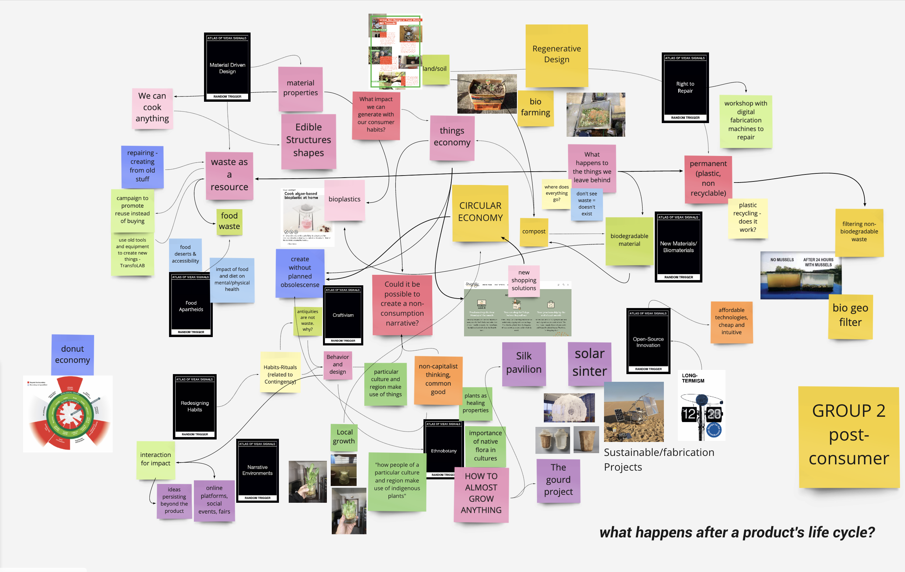
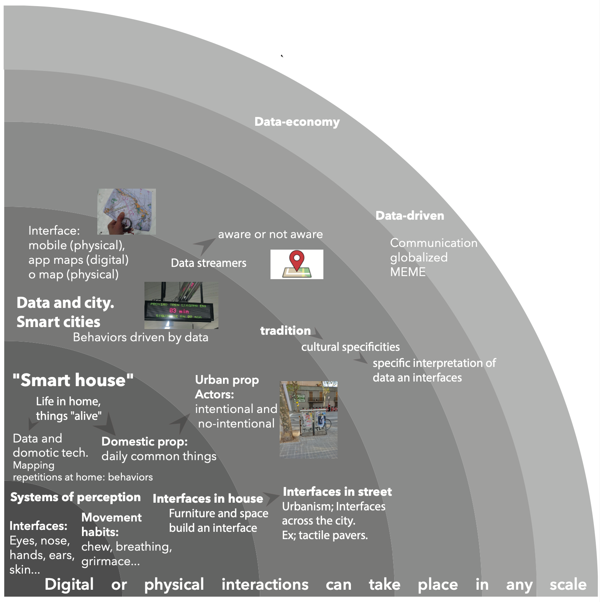

First design space 
Personal design space update 
First Collective design space with Post-consumer group 
Final Collective design space with Metahumans
Atlas of the weak signals
This week we have developed our first design space. This design space will be the space where we relate all the things we find in our contexts. These “things” can be objects, signals, trends, people, places.... Being together and sharing space those things can be related to each other through connections that we can’t imagine at first seeing things in isolation. In a way to start developing the space we made a first exercise with cards. These cards contain some topics, weak signals or areas of interest. This exercise works by making relations between random topics in a way to expand and generate knowledge by relating topics and making connections. After this exercise we started developing our first moodboard in the design space with our interests using the cards.
The collective interests within the group go across the spectrum of human-technology relationships; we include some general spheres as the physical form of tech, the relation human-tech, function, and its issues. Our main topics and concerns include the emotional and materiality of tech, data privacy, and data visualization, phygital identities, and interfaces.
Multiscalar diagram